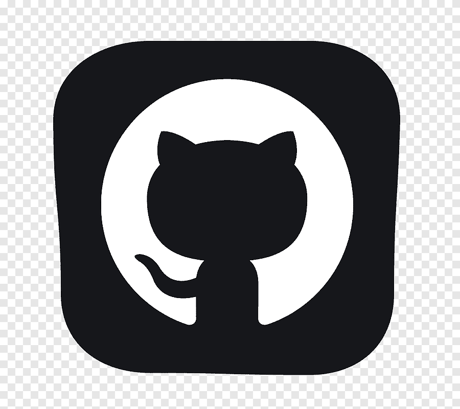

Site
WEB-СЕРВЕРИ ТА ПРИНЦИПИ ЇХ РОБОТИ З КОРИСТУВАЧЕМ. СЕРВЕРНІ WEB-ЗАСТОСУВАННЯ.
Мета: Придбати практичні навички встановлення та конфігурування WEB-сервера, встановлення та налаштування Apache.
Постановка задачі: Головним завданням даної лабораторної роботи є ознайомлення з використанням серверних web-застосувань, основних інструментів web-серверів та розумінням принципів їх роботи з користувачем.
Теоретичні знання необхідно закріпити практичним виконанням завдань, як-от додавання до сайту динамічних елементів, php-коду.
Після виконання вищеперелічених завдань необхідно запустити опрацьований документ у браузері для перевірки та переконатися, що все працює коректно.